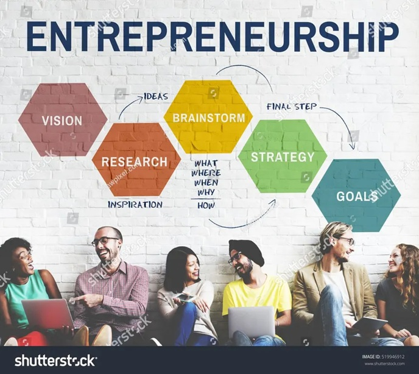

The V-EDC fosters innovation and entrepreneurship by organizing startup pitch contests, incubation programs, and networking sessions for aspiring entrepreneurs.The Entrepreneurship Development Cell (EDC) at VIT Pune, also known as V-EDC or E-Cell VIT Pune, is a prominent student-run organization dedicated to fostering entrepreneurship, innovation, and business growth among students. It aims to produce successful entrepreneurs imbued with leadership qualities through innovative and ethical business practices, with the goal of making a global impact. The cell provides a platform for students to convert their ideas into viable ventures, offering networking opportunities, mentorship, and exposure to funding possibilities.
